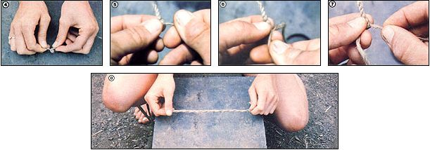

TOM BROWN
[4] For a reverse wrap, twist the fiber bundle in the middle until it kinks. [5] Now, bring the bottom strand toward you. . . [6] and wrap it once around the second strand. [7] Then do the same with the second strand, wrapping it around the first, and keep repeating this procedure. [8] When knotted on the end to keep it from unraveling, the result will be strong cordage that you can use like machine-made rope or twine.